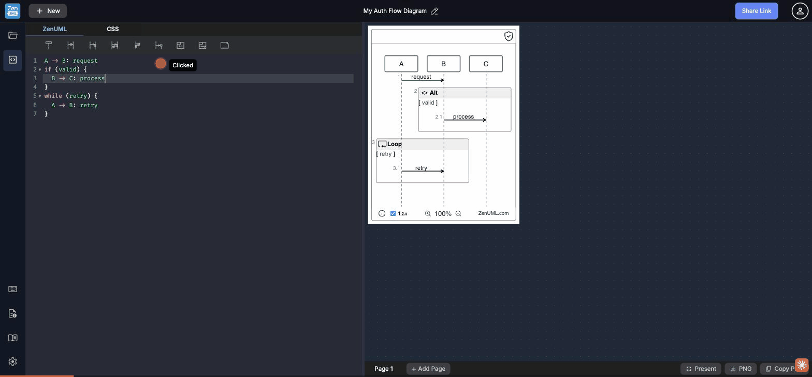

Silent parse failure · uncaught TypeError on keystrokes · error-gutter never populated · editor/canvas desync on undo

!!!INVALID@@@SYNTAX###) — canvas silently replaces diagram with an empty _STARTER_ participant. No error message, no inline squiggle, no banner. Cmd+Z ×10 reveals editor/canvas desync: editor empties but canvas shows a different prior diagram.When a user types completely invalid ZenUML (e.g., !!!INVALID@@@SYNTAX###), the canvas silently collapses to a near-empty diagram showing only an unlabeled internal _STARTER_ participant (a stickman box). There is:
• No error banner above or below the diagram
• No inline red squiggles in the editor (no CodeMirror lint markers; errorGutterChildCount: 0)
• No toast or notification (toasts: 0)
• No DOM error element visible (errorBanners: [])
• The canvas iframe has errorElements: [] — nothing conveys the error state to the user
Competing tools handle this dramatically better: Mermaid Live Editor shows a red "Parse error" banner with the specific line and token that failed. Kroki and PlantUML editors display the exception message inline. ZenUML's completely silent failure leaves users with no idea what went wrong — they must delete code manually to diagnose.
<div class="parse-error">Syntax error on line N: [message]</div> above the canvas footer. For inline editor feedback, add CodeMirror lint integration via cm.setOption("lint", true) with a custom linter that runs the ZenUML parser.window.saveBtn is undefined, silently killing the unsaved-changes warning animation
Every UNSAVED_WARNING_COUNT keystrokes, onCodeChange in app.jsx:914 attempts to access window.saveBtn.classList.add('animated'). Since window.saveBtn is undefined in the current app build, this throws a TypeError: Cannot read properties of undefined (reading 'classList') — confirmed by 10+ identical console EXCEPTION entries during a single typing session.
The consequences are doubled:
• The save animation never fires — users are never visually warned they have N unsaved changes. The "wobble" animation on the save button (which is the intended UX) is completely dead code in production.
• The exception is silently swallowed — the user sees nothing. There is no error boundary, no fallback, no degraded behavior — the app just quietly fails internally.
if (window.saveBtn) { window.saveBtn.classList.add('animated'); }. Better: replace the global window.saveBtn reference with a React ref (this.saveBtnRef = createRef() on the button element) — the global pattern is fragile and breaks if the button is conditionally rendered. This fix also restores the intended unsaved-changes animation.error-gutter is configured but never populated — inline error markers are dead infrastructure
The CodeMirror instance has a custom gutter registered as "error-gutter" — confirmed by the presence of a <div class="CodeMirror-gutter error-gutter"> in the DOM. This gutter was clearly designed to show per-line error indicators (like a red ✕ or warning triangle next to the offending line number).
However, gutterMarkers: 0 — no markers are ever placed in this gutter, even with 3 lines of completely invalid syntax. The gutter exists as a visible empty column next to the line numbers, occupying space without serving any purpose. The infrastructure for inline error indicators was planned but never completed.
cm.setGutterMarker(errorLine - 1, "error-gutter", marker). Clear markers on valid parse. This provides exactly the kind of inline feedback VS Code and other editors show.After typing invalid syntax and pressing Cmd+Z ten times, the editor empties completely (line 1 blank) while the canvas continues to show a fully rendered diagram (the previously saved "Auth Flow" diagram). The editor state and the rendered canvas state are out of sync.
This represents a violation of the "what you see is what you get" contract: the canvas is showing a diagram that is no longer represented by any editor content. A user in this state would:
• Think they still have a valid diagram when the editor shows nothing
• Be unable to determine what code produced the current canvas
• Be confused if they save — which version gets saved, the empty editor or the visible canvas?
cm.clearHistory() at load time to set the baseline._STARTER_ participant name leaks into the visible canvas on parse failure
When ZenUML fails to parse the input, it renders a fallback participant named _STARTER_ — an internal implementation detail. This participant is visible in the canvas iframe as a stickman box with no label. While the participant label itself is hidden (the stickman icon is the only rendering), the text _STARTER_ is present in the DOM (confirmed via allVisibleText: ["Click to add title", "_STARTER_"]) and could be visible in exported PNGs or in certain zoom/render states.
Users who export the diagram in an error state (not knowing the parse failed silently) may receive a PNG with a single unlabeled stickman — and have no idea why their diagram is "empty."
_STARTER_ fallback rendering with an explicit empty state component that shows a message like "Your diagram will appear here" or "Fix the syntax error to see the diagram." This separates the intentional empty state from the error state, and prevents internal implementation names from leaking into the visible DOM or exported artifacts.